#12089 The Report
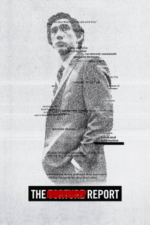 
 IMDB-Wertung: 7.2 / 10
IMDB-Wertung: 7.2 / 10  Tomatometer: 83
Tomatometer: 83  Metascore: 66
Metascore: 66 
In den USA greift die CIA nach den Anschlägen vom 11. September auf extreme Verhörtechniken zurück – als notwendig gerechtferttigt, sind sie in Wahrheit brutal, unmoralisch und ineffizient. Die CIA überschreitet dabei klar die Grenze zur Folter, um den Drahtziehern so um jeden Preis auf die Schliche zu kommen und weitere Anschläge zu verhindern, verliert dadurch jedoch ethische Fragen und fundamentale Grundsätze des Rechtsstaates vollkommen aus den Augen. Im Rahmen der Ermittlungen von Daniel Jones (Adam Driver) und Senatorin Dianne Feinstein (Annette Benning) sollen diese verurteilenswürdigen Methoden für die Bevölkerung ans Licht kommen, um sie so stoppen zu können. Doch noch bevor Jones und Feinstein irgendetwas von ihren Ergebnissen bekanntmachen können, legen die CIA und das Weiße Haus alles daran, ihre Arbeit zu erschweren und eine Veröffentlichung mit allen erdenklichen Mitteln zu verhindern…
Jahr: 2019
Dauer: 119 Minuten
FSK: 12
Land: USA Studio: Amazon StudiosTonspuren: - , - , - , - , - ,
Untertitel: Deutsch, Englisch,
Auflösung: 1080p (1920x800) Größe: 5335 MB
Genre: Thriller, Drama, Geschichte, Biographie
Regisseur: Scott Z. Burns
Drehbuch: Scott Z. Burns
Soundtrack: David Wingo
Darsteller:
 Adam Driver als Daniel Jones
Adam Driver als Daniel Jones Corey Stoll als Cyrus Clifford
Corey Stoll als Cyrus Clifford- Evander Duck Jr. als Off Site Security Guard
 Jon Hamm als Denis McDonough
Jon Hamm als Denis McDonough- Linda Powell als Marcy Morris
 Annette Bening als Senator Dianne Feinstein
Annette Bening als Senator Dianne Feinstein- 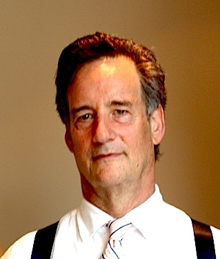 John Rothman als Senator Sheldon Whitehouse
- 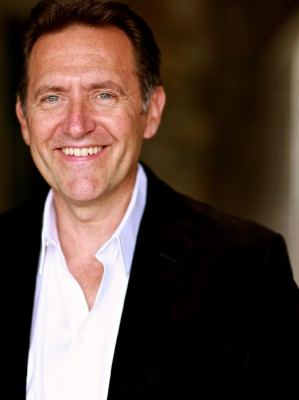 Victor Slezak als Senator Jay Rockefeller
- 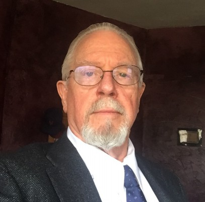 Guy Boyd als Senator Saxby Chambliss
- Alexander Chaplin als Sean Murphy
- Joanne Tucker als Gretchen
- 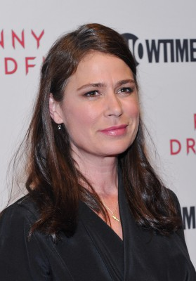 Maura Tierney als Bernadette
- 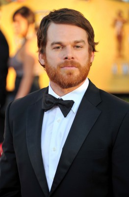 Michael C. Hall als Thomas Eastman
- 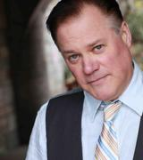 Ian Blackman als Cofer Black
- 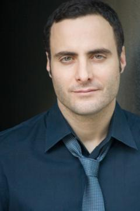 Dominic Fumusa als George Tenet
- 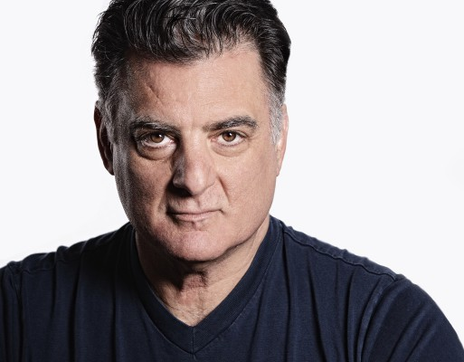 Joseph Siravo als John Rizzo
- Sarah Goldberg als April
- Lucas Dixon als Julian
- Fajer Al-Kaisi als Ali Soufan
- Zuhdi Boueri als Abu Zubaydah
 Douglas Hodge als James Mitchell
Douglas Hodge als James Mitchell- T. Ryder Smith als Bruce Jessen
- 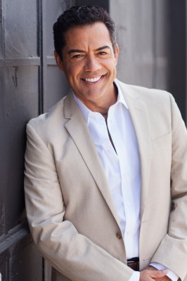 Carlos Gómez als Jose Rodriguez
- Sean Dugan als Gary - CIA Interrogator
- 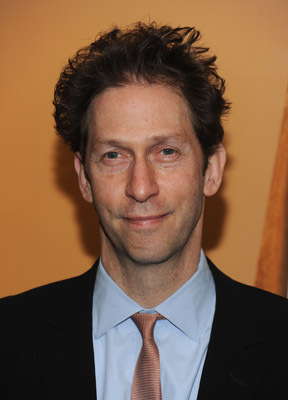 Tim Blake Nelson als Raymond Nathan
- Pun Bandhu als John Yoo
 Ben McKenzie als Scrubbed CIA Officer
Ben McKenzie als Scrubbed CIA Officer- Jake Silbermann als Yoked Up CIA Officer
- Ratnesh Dubey als Khaled Sheikh Muhammad
 Ted Levine als John Brennan
Ted Levine als John Brennan- Scott Shepherd als Senator Mark Udall
- Julia Murney als McDonough's Secretary
- 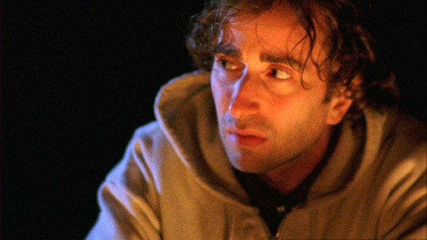 Daniel London als CIA Officer Fox
 Jennifer Morrison als Caroline Krass
Jennifer Morrison als Caroline Krass- Hope Blackstock als Clifford's Secretary
- 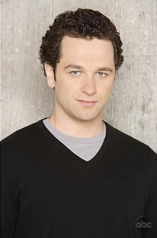 Matthew Rhys als New York Times Reporter
- Kate Beahan als Candace Ames
- April Rogalski als Assistant to DCI Brennan
- James Hindman als Inspector General Buckley
- Austin Michael Young als FBI Agent Miller
- West Duchovny als Feinstein Intern
- Noah Bean als Senator Martin Heinrich
- Dick Cheney als Himself (archive footage)
- John Kerry als Himself (archive footage)
- Rachel Maddow als Herself
- John McCain als Himself (archive footage)
 Barack Obama als Himself (archive footage)
Barack Obama als Himself (archive footage)- Donald Rumsfeld als Himself (archive footage)
- Genevieve Adams als Flight Instructor (uncredited)
- Xan Aspero als Marco Rubio (uncredited)
Datei: X:\2019(N-Z)\Report, The (2019, FSK12, 1920x800).mkv seit 01.12.2019
Festplatte: HD 2018(G-Z)-2019(A-Z)
 Es gibt insgesamt 62 Filme in der Gruppe '2019(N-Z)'
Es gibt insgesamt 62 Filme in der Gruppe '2019(N-Z)'